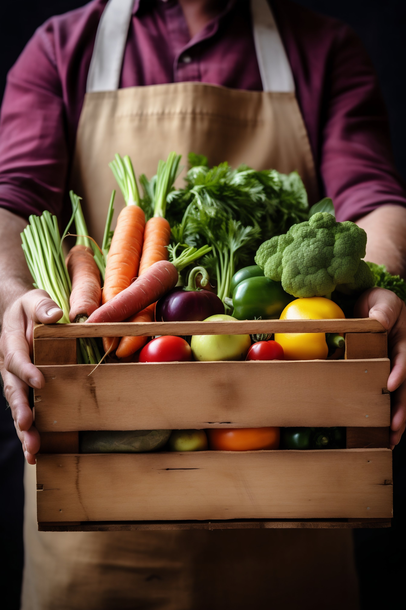

토마토 달걀 볶음
필요한 재료
토마토, 달걀 2개, 대파, 올리브유, 소금/후춧가루 약간
만드는 방법
- 토마토와 대파는 먹기 좋게 썰어준다.
- 달걀에 소금을 약간 넣고 푼 후, 약한 불로 프라이팬에 올리브유를 두르고 붓는다.
- 2가 살짝 익기 시작하면 젓가락으로 휘저어 익혀서 그릇에 담는다. 살짝 덜 익은 상태에서 불을 꺼야 달걀이 촉촉하고 부드러워진다.
- 팬에 올리브유를 두르고 1의 대파를 먼저 볶다가 토마토를 넣어 함께 볶는다.
- 4에 3을 넣고 소금과 후춧가루로 간을 맞춘 뒤 살짝 버무린다.
- 불을 끄고 그릇에 담는다.